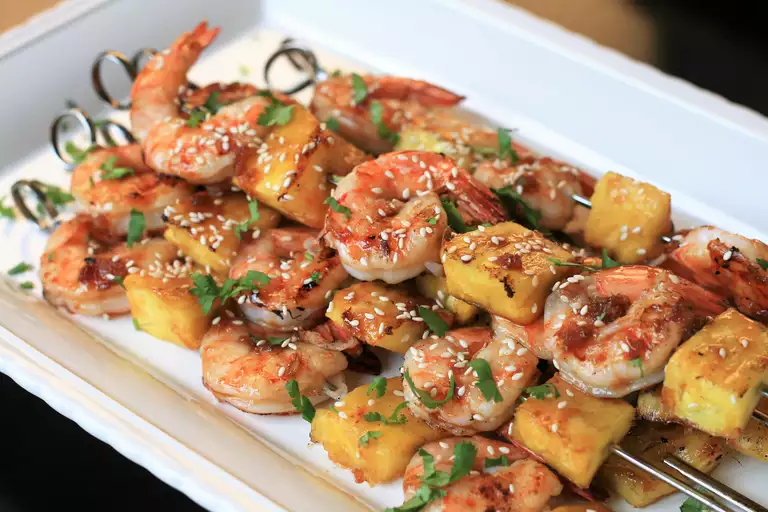

Grilled Teriyaki Shrimp and Pineapple Skewers

Savory Sweet and Easy To Make
These delicious shrimp and pinapple skewers are a quick and easy make.
Ingredients
- ⅓ cup water
- 2 tablespoons brown sugar
- 2 tablespoons soy sauce
- 1 teaspoon grated fresh garlic
- 1 teaspoon grated fresh ginger
- 1 teaspoon honey
- 1 pound jumbo shrimp
- ½ fresh pineapple, cored and cut into 1 1/2-inch pieces
- 2 tablespoons minced fresh cilantro (Optional)
- 1 tablespoon toasted sesame seeds (Optional)
- skewers
Steps
- Combine water, soy sauce, honey, brown sugar, ginger, and garlic in a small saucepan. Bring it to a boil over medium-high heat. Reduce heat to medium-low and simmer until sauce has thickened slightly (8 to 10 minutes).
- Preheat an outdoor grill to medium-high and lightly oil the grate. Thread shrimp and pineapple alternately onto skewers and place on a platter.
- Arrange skewers on the hot grate. Grill 2 - 3 minutes per side or until shrimp is opaque and cooked through. Lower the heat on the grill and brush sauce on both sides of the skewers. Transfer to a serving platter and sprinkle with cilantro and sesame seeds.